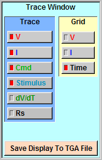
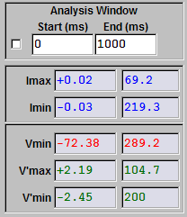
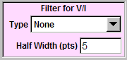
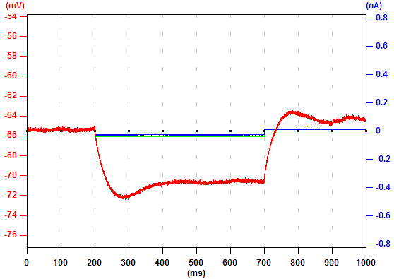
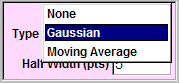
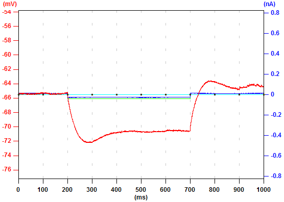

Display ControlYou can decide whether to display the voltage (V), the current (I), the command (Cmd), the stimulus (Stimulus), or dV/dT (dV/dT) in the electrophysiology window by checking or unchecking respective buttons. You can save the electrophysiology window to a TGA file by clicking "Save Display To TGA File" and following the instructions. |
 | |
Analysis Period ControlBy default, Ephic analyzes the whole trace. You can specify the analysis period by checking the square box and typing the start and end time in the "Start (ms)" and "End (ms)" boxes and press "Enter". The maximum current and its latency, the minimum current and its latency, the minimum voltage and its latency, the maximum dV/dT and its latency, and the minimum dV/dT and its latency are displayed. |
 | |
Digital FilterEphic provides two types of digital fileters, Gaussian and Moving Average, which you can use to reduce noise. You can also control the half width of these filters by typing the number of points in the "Half Width (pts)" box and press "Enter". In this example, none of these filters is used and the original data is displayed. |
 |  |
| To use the Gaussian filter, click "Type" and select "Gaussian". You will see the noise is much smaller now. much smaller now. |  |  |